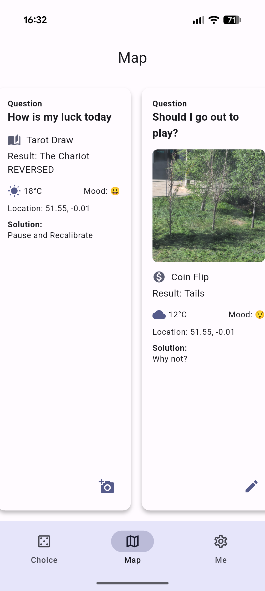
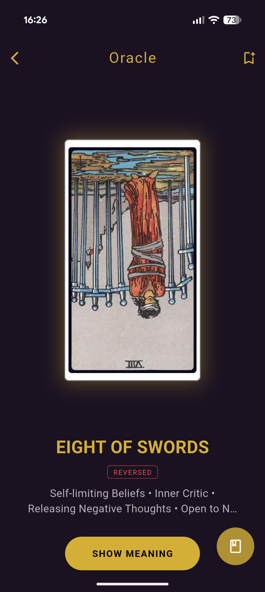
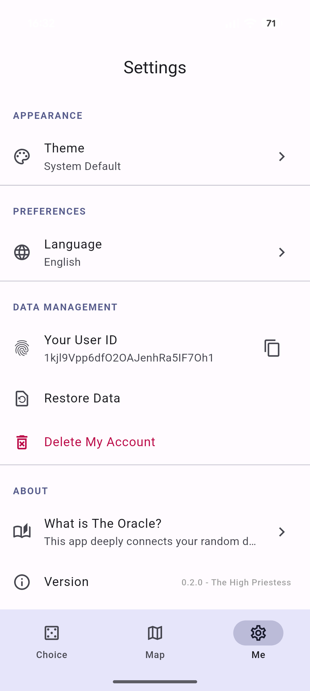

A calm tool for everyday choices.
Oracle Map helps people pause, use simple physical actions, and record the small decisions that shape daily life.



Not an answer machine.
The app does not tell users what to do. It supports reflection through simple tools, movement, and optional records.
Small choices can take real energy. Oracle Map gives users a quiet way to test how they feel about a result before making their own final decision.
The tools are subjective by design: coin, tarot, dice, and fortune sticks. They help users notice agreement, doubt, relief, or resistance.
Core features
Four decision tools, optional saving, and a timeline for reviewing choices later.
Tap and shake gestures make each result feel less like a button press.
Coin, tarot, dice, and fortune sticks all give visible feedback.
Saved moments become a personal record of daily choices.
Mood, weather, location, and images can add meaning to each choice.
Screens
The app uses simple screens for choosing a tool, making a decision, and reviewing saved records.
Choice tools
Dice roll
 Fortune sticks
Fortune sticks

Oracle
SettingsConnected environment
Each saved record can connect a personal decision with the physical moment around it.
- Motion sensors
- Location data
- OpenWeatherMap API
- Firebase Auth
- Cloud Firestore
- Camera and gallery
Tested on real devices
The main flows were checked on both Android and iOS phones.
- Google Pixel 9 Pro XL
- iPhone 15 Pro
- Install and launch
- Tool animations
- Shake interaction
- Decision saving